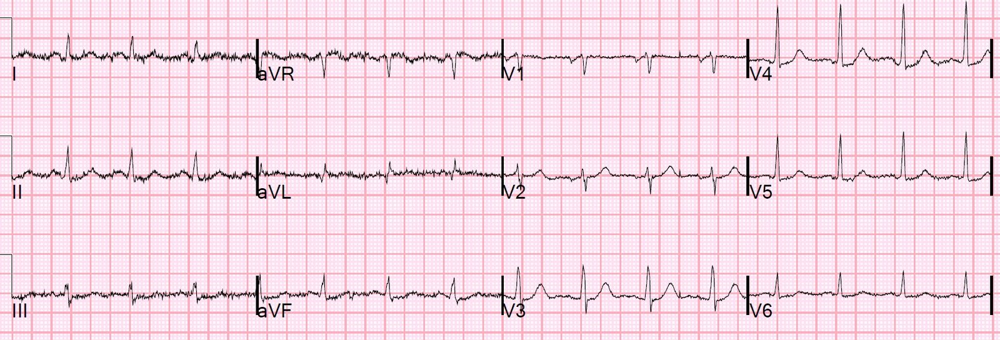
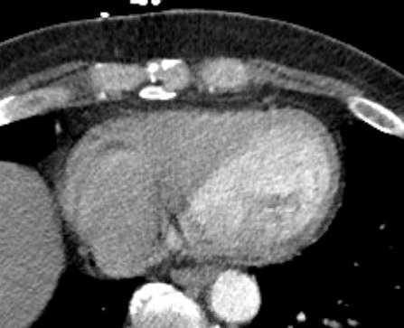
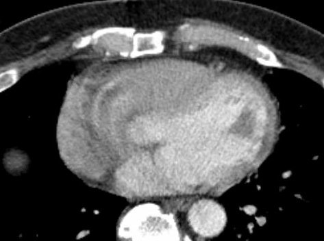
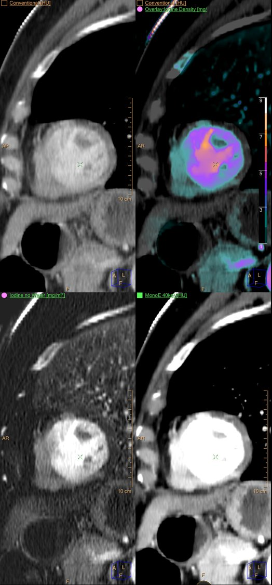
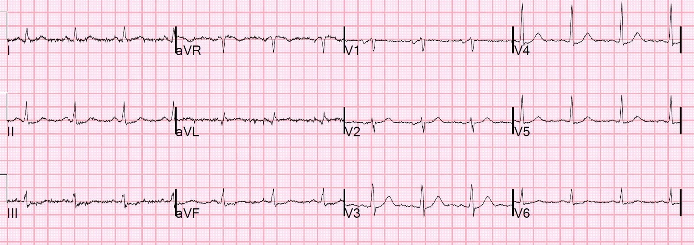
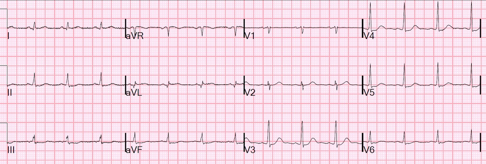
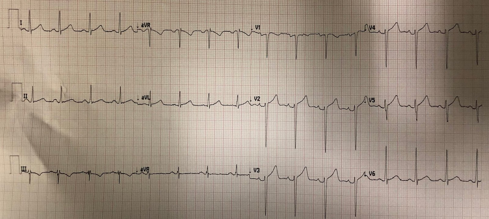
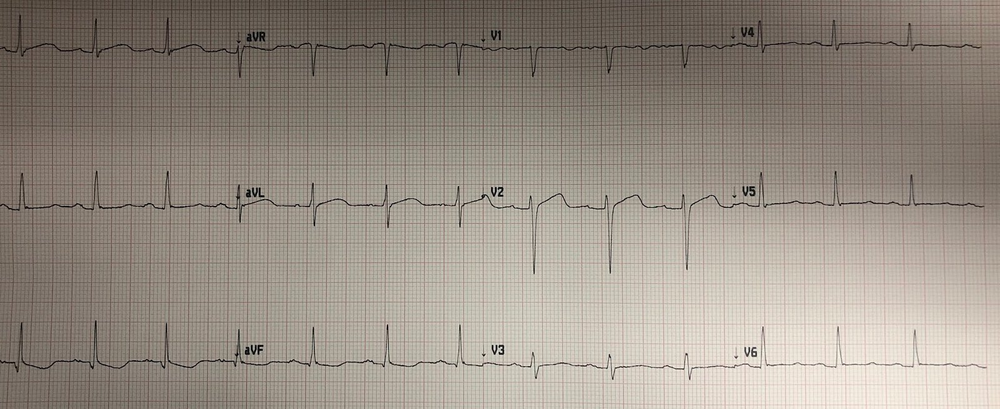
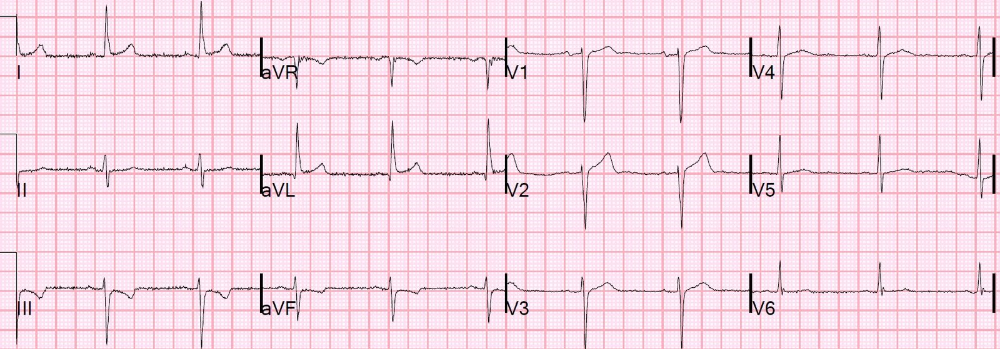
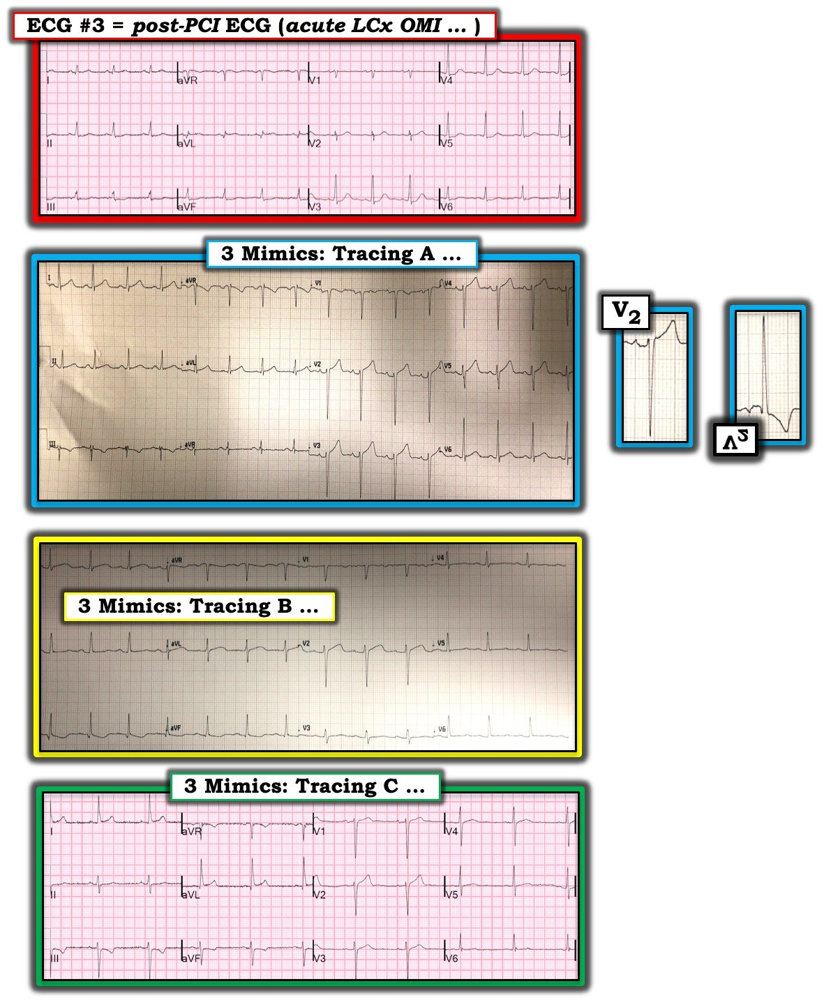

29/03/2019 — Đau thượng vị lan lên ngực trong 18 giờ. Điện tâm đồ cho chẩn đoán. Troponin cho chẩn đoán. CT cho chẩn đoán!
Bản dịch tiếng Việt của bài "Epigastric pain radiating to the chest for 18 hours. ECG makes the Dx. Troponin makes the Dx. CT makes the Dx!" – Dr. Smith’s ECG Blog. Giữ nguyên toàn bộ 12 hình ảnh và 1 video của bản gốc.
Tôi được cho xem điện tâm đồ này mà không kèm thông tin nào khác:


Tôi trả lời ngay lập tức: “Nhồi máu cơ tim thành bên cao kèm nhồi máu cơ tim thành sau. OMI.” (Nhồi máu cơ tim do tắc (Occlusion Myocardial Infarction))
Tôi hỏi: “Bệnh nhân có đến viện vì đau ngực không?”
Đây là bệnh sử: “Một bệnh nhân nam trung niên than đau thượng vị khoảng 18 giờ, lan lên ngực. Ông cũng bị xệ mặt, có vẻ mới xuất hiện, với thời gian tương đương. Báo động đột quỵ (stroke code) đã được kích hoạt, thang điểm đột quỵ NIH chỉ là 1, và sự chú ý được chuyển sang cơn đau ngực.” Huyết áp là 148/83.
Tôi đã chẩn đoán điện tâm đồ này như thế nào?
Có ST chênh lên (STE) kín đáo ở aVL kèm ST chênh xuống (STD) soi gương ở II, III, aVF, và STD ở V3 và V4.
Tuy có những điện tâm đồ có STE ở aVL kèm STD soi gương ở II, III, aVF mà không có OMI, nhưng chúng không đồng thời có STD ở các chuyển đạo trước tim bên phải. Hơn nữa, hình thái ở đây hoàn toàn điển hình cho OMI.
(Xem cuối bài để thấy 3 điện tâm đồ trong tuần này có STE ở aVL và STD ở III, mà câu trả lời của tôi là “không có thiếu máu cục bộ.”)
Họ đã làm siêu âm tim tại giường (mặt cắt trục ngắn cạnh ức):
Bạn nghĩ gì?
Hãy để ý phần phía trên bên phải (vách liên thất) co bóp mạnh hơn nhiều so với phần phía dưới bên phải và bên phải (thành bên)
Bác sĩ đã không nhận ra điều này vì ông đang nghĩ tới cơn đau của bệnh nhân kết hợp với xệ mặt, và do đó ông đã hợp lý khi cho chụp CT động mạch chủ ngực để tìm bóc tách động mạch chủ. Phim không cho thấy bóc tách, nhưng cho thấy các hình ảnh sau đây của tim bệnh nhân:




Trưởng khoa chẩn đoán hình ảnh của chúng tôi, Gopal Punjabi, là một thiên tài về CT. Ông rất thích dùng CT phổ (Spectral CT), và có một blog về CT phổ: https://www.ctspectral.com/
Ông đã áp dụng CT phổ:


Ông đã chẩn đoán nhồi máu cơ tim cấp ngay từ phòng đọc CT của mình.
Để xem thêm các ca chẩn đoán thiếu máu cục bộ cơ tim bằng CT qua khuyết tưới máu (tất cả đều do Dr. Punjabi), xem tại đây:
—A middle-aged man with severe syncope, diffuse weakness (Một người đàn ông trung niên bị ngất nặng, yếu lan tỏa)
—A Picture of Subendocardial Ischemia (Một hình ảnh thiếu máu cục bộ dưới nội tâm mạc)
Ca bệnh tiếp diễn
Đúng vào lúc bác sĩ chẩn đoán hình ảnh gọi điện báo động nhồi máu cơ tim cấp, kết quả troponin I đầu tiên trả về là 39.4 ng/mL (rất cao). Trong hầu như mọi tình huống, một mức troponin cao như vậy (ngay cả khi không có điện tâm đồ và CT) cần được xem là chẩn đoán OMI cho tới khi chụp mạch vành chứng minh điều ngược lại. Đau ngực cấp kháng trị là chỉ định chụp mạch vành cấp cứu, bất kể điện tâm đồ hay bất kỳ bằng chứng hình ảnh học nào về thiếu máu cục bộ.
Có thể là một bệnh khác không? Có thể, nhưng khó xảy ra. Viêm cơ tim, takotsubo, nhồi máu cơ tim típ 2 và các bệnh khác hầu như không bao giờ có troponin cao đến mức này.
Đã bắt đầu truyền nitroglycerin tĩnh mạch. Đã cho aspirin và heparin.
Điện tâm đồ thứ 2 được ghi sau đó, trong lúc bệnh nhân vẫn còn đau:


Đã mời hội chẩn tim mạch.
Troponin lần thứ hai trả về là 55.6 ng/mL. Cơn đau vẫn tiếp tục. Troponin lần thứ ba trả về là 57.1 ng/mL. Cơn đau vẫn tiếp tục.
Các bác sĩ khoa cấp cứu (ED) quyết định cho nitroglycerin.
Huyết áp tụt xuống 96/54 và cơn đau không hết (dù đã cho thêm cả hydromorphone — thuốc này chỉ có thể gây hại vì che lấp cơn đau).
Troponin lần thứ 4 trả về là 63.8 ng/mL và bệnh nhân được đưa đi chụp mạch vành.
Khi chụp mạch vành, bệnh nhân bị tắc 100% động mạch mũ.
Động mạch được tái thông và đặt stent.
Troponin đạt đỉnh 2.5 giờ sau chụp mạch vành, và 12 giờ sau khi đến viện, ở mức 135.6 ng/mL. Mức này rất cao.
Siêu âm tim ngày hôm sau:
Kích thước thất trái bình thường, phì đại thất trái đồng tâm nhẹ, và chức năng tâm thu bình thường.
Phân suất tống máu thất trái ước tính là 60%.
Rối loạn vận động thành khu trú-dưới-bên, giảm động.
(May mắn là phân suất tống máu (EF) của bệnh nhân vẫn còn khá tốt.)
Đây là điện tâm đồ sau PCI:


Những điểm cần học:
1. Hãy học cách nhận ra ST chênh lên ở aVL, kèm STD soi gương ở các chuyển đạo dưới.
2. Hãy học cách phân biệt nó với các hình ảnh trông giống (xem bên dưới)
3. Hãy chú ý đến tưới máu của tim với thuốc cản quang trên phim chụp CT.
4. Troponin rất cao hầu như luôn là nhồi máu cơ tim típ 1 do OMI
5. Hãy dùng siêu âm tim để hỗ trợ chẩn đoán.
Các hình ảnh giả thành bên cao
Đây là một bài trước đây về STE ở aVL, và khi nào nó phản ánh OMI thành bên cao và khi nào thì không
True Positive ST elevation in aVL vs. False Positive ST elevation in aVL (ST chênh lên ở aVL dương tính thật so với ST chênh lên ở aVL dương tính giả)
Đây là một số điện tâm đồ khác tôi được cho xem trong tuần này, ở các bệnh nhân đau ngực:


Bạn nghĩ gì?




Phản ứng tức thì của tôi với tất cả là “bình thường.” Và chúng đúng là bình thường. Chúng chỉ đơn giản là không có “dáng vẻ” của thiếu máu cục bộ. Tôi chắc rằng Ken Grauer có thể nói chính xác cho chúng ta điều gì khiến những bản ghi này không phải thiếu máu cục bộ, trong khi ngược lại, bản ghi ở đầu bài đúng là thiếu máu cục bộ và chúng ta có thể nhận ra nó như vậy. Tất cả những gì tôi có thể nói là chúng là một gương mặt mà tôi có thể nhận ra.

===================================
Bình luận của KEN GRAUER, MD (29/3/2019):
===================================
Một bài viết tuyệt vời của Dr. Smith — lẽ ra nên được đặt tên là “Một Gương Mặt Tôi Có Thể Nhận Ra”. Phân tích sắc sảo từng bước một của Dr. Smith đối với các điện tâm đồ liên tiếp trong ca này + tài liệu bổ sung (siêu âm tim, chụp CT mạch máu, CT phổ) không cần giải thích gì thêm. Nhưng tôi muốn bình luận về 3 điện tâm đồ khác mà ông được nhờ đánh giá trong tuần này — những bản ghi mà chẩn đoán không phải là OMI.
- Như Dr. Smith đã nói, mặc dù có ST chênh lên ở chuyển đạo aVL kèm ST chênh xuống soi gương ở chuyển đạo III trong mỗi ca — cả 3 bản ghi này đều là những “gương mặt” mà Dr. Smith ngay lập tức nhận ra là không do thiếu máu cục bộ/OMI cấp.
- Tôi đưa 4 điện tâm đồ vào Hình 1 dưới đây. Để cho rõ ràng — tôi đặt ở vị trí bản ghi TRÊN CÙNG là điện tâm đồ #3 = điện tâm đồ thứ 3 được ghi trong ca này, được ghi sau PCI để điều trị tắc LCx cấp. 3 điện tâm đồ bên dưới bản ghi trên cùng này — là 3 “hình ảnh giả” (Mimics) biểu hiện ST chênh lên ở aVL + ST chênh xuống soi gương ở chuyển đạo III, nhưng không phải là hậu quả của OMI cấp.


====================
BÌNH LUẬN: Khả năng của Dr. Smith trong việc ngay lập tức nhận ra “gương mặt” của OMI cấp — và phân biệt nó với các hình ảnh giả thiếu máu cục bộ cấp, thực sự xuất chúng! Đó là kết quả của nhiều năm ông đánh giá hết ca này đến ca khác, kèm theo việc theo dõi diễn tiến từng ca không ai sánh kịp của ông. Ông hầu như không bao giờ sai.
- Phải thừa nhận rằng tôi không nhanh bằng Dr. Smith trong việc đi tới một chẩn đoán xác định. Với hy vọng rằng cách tiếp cận của tôi với từng bản ghi có thể mang lại những hiểu biết hữu ích — tôi xin đưa ra những suy ngẫm sau đây về 4 bản ghi trình bày trong Hình 1.
====================
ĐIỆN TÂM ĐỒ #3: Với mục đích minh họa — tôi chọn bản ghi có chất lượng tốt nhất trong 3 điện tâm đồ được ghi cho bệnh nhân trong ca này. Đây là điện tâm đồ được ghi sau PCI điều trị tắc LCx cấp ( = điện tâm đồ #3). Mặc dù mức độ lệch đoạn ST ở bất kỳ chuyển đạo nào trong điện tâm đồ #3 đều khiêm tốn — bản ghi này cần được ngay lập tức nhận định là có thể có thiếu máu cục bộ cấp mới xuất hiện hoặc rất gần đây cho tới khi chứng minh được điều ngược lại:
- Chuyển đạo aVL biểu hiện ST chênh lên với hình dạng “trông cấp tính”. Dù biên độ phức bộ QRS rất nhỏ — riêng hình dạng này đã rất đáng nghi ngờ bệnh lý cấp. Chuyển đạo này cũng có một sóng Q rõ ràng — sâu không tương xứng so với sóng R rất nhỏ.
- Không chỉ chuyển đạo III biểu hiện hình ảnh đối xứng gương (mirror-image) của ST chênh xuống soi gương (với ST chênh lên thấy ở aVL) — mà cả hai chuyển đạo dưới còn lại (II, aVF) đều cho thấy ST dẹt và chênh xuống kín đáo-nhưng-chắc chắn-bất thường!
- Dù không chênh lên — sóng T ở chuyển đạo V2 trông cao-hơn-và-đầy-hơn-mức-đáng-có so với biên độ rất nhỏ của phức bộ QRS ở chuyển đạo này.
- Có đoạn ST dẹt kèm ST chênh xuống kín đáo-nhưng-có thật ở các chuyển đạo V3, V4, V5 và V6.
ĐIỀU CỐT LÕI về ĐIỆN TÂM ĐỒ #3: Có ST chênh lên với hình dạng bất thường ở chuyển đạo aVL — kèm các bất thường sóng ST-T kín đáo-nhưng-có thật ở không dưới 8 trong số 11 chuyển đạo còn lại. Ở bệnh nhân đau ngực mới khởi phát này — một bản ghi như thế này phải được xem là cấp hoặc mới đây cho tới khi chứng minh được điều ngược lại.
- Tôi muốn đối chiếu những dấu hiệu này trong điện tâm đồ #3 — với những gì chúng ta không thấy trong 3 điện tâm đồ còn lại …
====================
Bản ghi A: Mặc dù có ST chênh lên ở chuyển đạo aVL kèm ST chênh xuống soi gương ở chuyển đạo III — bản ghi này trông ít có khả năng là cấp hơn nhiều. Các lý do để có mức độ nghi ngờ thấp đối với OMI cấp ở Bản ghi A bao gồm:
- Có LVH rõ rệt (phì đại thất trái)! Dấu hiệu sóng S rất sâu ở các chuyển đạo trước (~23mm ở V2; ~20mm ở V3) + sóng R cao đến bất ngờ ở V6 (dù vùng chuyển tiếp muộn) rõ ràng thỏa mãn tiêu chuẩn điện thế của LVH. Mặc dù thay đổi sóng ST-T của “tăng gánh” thất trái thường gặp nhất ở các chuyển đạo bên — đôi khi “tăng gánh” thất trái có thể biểu hiện dưới dạng ST chênh lên ở các chuyển đạo trước, đặc biệt khi đi kèm sóng S sâu bất thường ở các chuyển đạo trước. Ảnh chèn phóng to bên phải Bản ghi A cho thấy hình ảnh đối xứng gương của sóng ST-T ở chuyển đạo V2 mang hình dạng sóng ST-T giống hệt hình dạng dự kiến khi có “tăng gánh” thất trái rõ rệt.
- Dấu hiệu sóng T đảo ngược đơn độc ở chuyển đạo III (ngay cả khi sâu và đối xứng, như thấy ở Bản ghi A) — không nhất thiết là bất thường. Điều này càng đúng khi phức bộ QRS ở chuyển đạo này chủ yếu âm, như thấy ở đây.
- Hình dạng sóng T dương và đoạn ST hơi chênh lên ở chuyển đạo aVL trông tương tự hình ảnh sóng ST-T ở 5 trong 6 chuyển đạo ngực — và hình dạng này ở các chuyển đạo ngực có sóng S sâu dường như nhiều khả năng nhất là do LVH.
- ĐIỀU CỐT LÕI: Dấu hiệu nổi bật ở Bản ghi A là LVH rõ rệt + “tăng gánh” thất trái ở các chuyển đạo trước. LVH là một hình ảnh giả thường gặp của thiếu máu cục bộ cấp. Mặc dù tôi sẽ không chắc chắn 100% chỉ dựa vào Bản ghi A rằng không có gì cấp tính đang diễn ra (tức là, sóng T ở chuyển đạo V5 có vẻ hơi-cao-hơn-dự-kiến so với sóng r tương đối nhỏ ở chuyển đạo này) — hầu như tất cả các dấu hiệu mô tả ở trên đều có thể giải thích được bằng LVH rõ rệt.
====================
Bản ghi B: QTc kéo dài ở Bản ghi B (tôi ước tính khoảng ~460-470msec). Mặc dù đoạn ST có dạng vòm (coving) và hơi chênh lên ở các chuyển đạo I, aVL và V2 — đường cong của đoạn ST trông rất thoai thoải ở các chuyển đạo này (trái ngược với sóng ST-T ở các chuyển đạo aVL và V2 của điện tâm đồ #3). Hình ảnh này trông không cấp tính. Ủng hộ cho khả năng thấp rằng ST dạng vòm này là cấp tính — đường cong đi xuống đối xứng gương của đoạn ST ở các chuyển đạo III và aVF cũng thoai thoải tương tự — và sóng ST-T chỉ đơn giản là “dẹt” (không chênh xuống) ở 5 chuyển đạo khác (các chuyển đạo II, V3-V6).
- Bản ghi này đơn giản là trông không cấp tính …
====================
Bản ghi C: Dấu hiệu sóng T đảo ngược ở chuyển đạo III hoặc ở chuyển đạo aVF hoặc cả hai không nhất thiết là bất thường. Vì lý do này — tôi đặt nặng vai trò của hình ảnh sóng ST-T ở chuyển đạo dưới thứ 3 = chuyển đạo II khi ra quyết định. Mặc dù ở Bản ghi C, sóng ST-T ở chuyển đạo II hơi dẹt — không có chút gợi ý nào của sóng T đảo ngược. Xét việc phức bộ QRS chủ yếu âm ở 2 chuyển đạo có sóng T đảo ngược này và, không có điểm J chênh xuống ở 2 chuyển đạo này — tôi không nghĩ có thể đi đến kết luận nào về việc sóng T đảo ngược ở các chuyển đạo III và aVF của Bản ghi C có phải là cấp tính hay không.
- ST chênh lên nhẹ ở chuyển đạo aVL có dạng lõm (concave-up) (tức là, dạng “mặt cười”) — và hoàn toàn phù hợp với một bất thường tái cực. Sóng q ở chuyển đạo aVL phù hợp với sóng q “vách” bình thường. Và, hình dạng của đoạn ST ở chuyển đạo III là hình ảnh đối xứng gương ngược chiều với đoạn ST chênh lên ở aVL, vốn trông giống một biến thể tái cực.
- Toàn cảnh ở các chuyển đạo chi trông không cấp tính.
- Ủng hộ cho khả năng thấp rằng các dấu hiệu ở chuyển đạo chi này là cấp tính — các chuyển đạo ngực không đưa ra kết luận được. Mặc dù người ta có thể băn khoăn về kích thước sóng T ở chuyển đạo V2 so với sóng r nhỏ ở chuyển đạo này — không chuyển đạo lân cận nào (V1 hay V3) cho dù chỉ một gợi ý bất thường — và, sóng ST-T ở V4-6 dẹt không có gì đáng kể. Vì vậy, mặc dù tôi có thể không chắc chắn 100% chỉ dựa vào Bản ghi C rằng không có gì cấp tính đang diễn ra (tùy thuộc vào mức độ đáng ngờ của bệnh sử) — mức độ nghi ngờ của tôi đối với bệnh mạch vành cấp rõ ràng là thấp.
====================
Những điểm Cần học Bổ sung:
- Hãy chú ý tới hình dạng sóng ST-T. Hình dạng thường quan trọng hơn so với mức độ lệch của sóng ST-T.
- Càng nhiều chuyển đạo cho thấy các bất thường sóng ST-T kín đáo-nhưng-có thật phù hợp với toàn cảnh — thì các thay đổi này càng có nhiều khả năng là cấp tính.
- Bạn không cần phải đưa ra quyết định dứt khoát chỉ dựa trên một bản ghi duy nhất. Đối chiếu lâm sàng với bệnh sử, các bản ghi liên tiếp và các phương tiện chẩn đoán bổ sung thường có thể cho một câu trả lời chắc chắn hơn một cách tiết kiệm thời gian.
Chúng tôi xin CẢM ƠN Dr. Smith vì ca bệnh rất sâu sắc này!